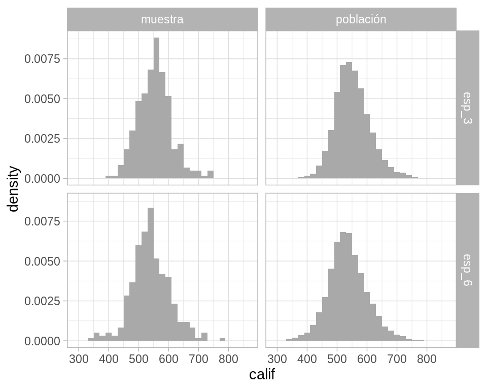
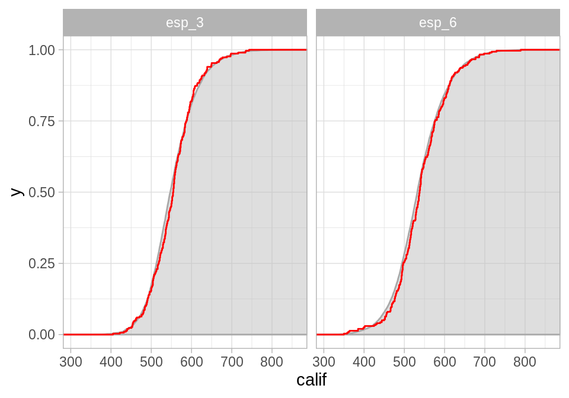
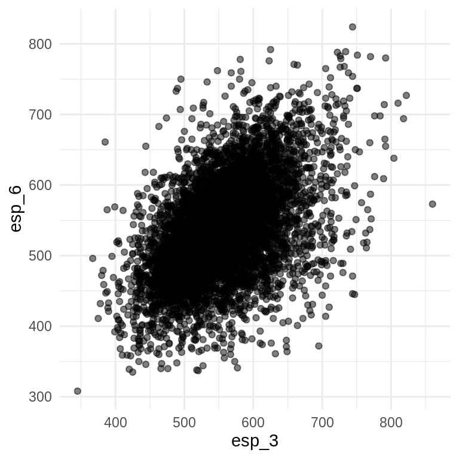

6.1 El principio del plug-in
Muestras aleatorias
Supongamos que tenemos una población finita o universo \(U\), conformado por unidades individuales con propiedades que nos gustaría aprender (opinión política, nivel educativo, preferencias de consumo, …). Debido a que es muy difícil y caro examinar cada unidad en \(U\) seleccionamos una muestra aleatoria.
Una muestra aleatoria de tamaño \(n\) se define como una colección de \(n\) unidades \(u_1,...,u_n\) seleccionadas aleatoriamente de una población \(U\).
Una vez que se selecciona una muestra aleatoria, los datos observados son la colección de medidas \(x_1,...,x_n\), también denotadas \(\textbf{x} = (x_1,...,x_n)\).
En principio, el proceso de muestreo es como sigue:
Seleccionamos \(n\) enteros de manera independiente (con probabilidad \(1/N\)), cada uno de ellos asociado a un número entre \(1\) y \(N\).
Los enteros determinan las unidades que seleccionamos y tomamos medidas a cada unidad.
En la práctica el proceso de selección suele ser más complicado y la definición de la población \(U\) suele ser deficiente; sin embargo, el marco conceptual sigue siendo útil para entender la inferencia estadística.
Nuestra definición de muestra aleatoria comprende muestras con y sin reemplazo:
muestra sin reemplazo: una unidad particular puede aparecer a lo más una vez.
- muestra con reemplazo: permite que una unidad aparezca más de una vez.
Es más común tomar muestras sin remplazo, sin embargo, para hacer inferencia suele ser más sencillo permitir repeticiones (muestreo con remplazo) y si el tamaño de la muestra \(n\) es mucho más chico que la población \(N\), la probabilidad de muestrear la misma unidad más de una vez es chica.
El caso particular en el que obtenemos las medidas de interés de cada unidad en la población se denomina censo, y denotamos al conjunto de datos observados de la población por \(\mathcal{X}\).
En general, no nos interesa simplemente describir la muestra que observamos sino que queremos aprender acerca de la población de donde se seleccionó la muestra:
El objetivo de la inferencia estadística es expresar lo que hemos aprendido de la población \(\mathcal{X}\) a partir de los datos observados \(\textbf{x}\).
Ejemplo: ENLACE
Veamos un ejemplo donde tomamos una muestra de 300 escuelas primarias del Estado de México, de un universo de 7,518 escuelas,
library(estcomp)
# universo
enlace <- enlacep_2013 %>%
janitor::clean_names() %>%
mutate(id = 1:n()) %>%
select(id, cve_ent, turno, tipo, esp_3 = punt_esp_3, esp_6 = punt_esp_6,
n_eval_3 = alum_eval_3, n_eval_6 = alum_eval_6) %>%
na.omit() %>%
filter(esp_3 > 0, esp_6 > 0, n_eval_3 > 0, n_eval_6 > 0, cve_ent == "15")
glimpse(enlace)
#> Observations: 7,518
#> Variables: 8
#> $ id <int> 38570, 38571, 38572, 38573, 38574, 38575, 38576, 38577,…
#> $ cve_ent <chr> "15", "15", "15", "15", "15", "15", "15", "15", "15", "…
#> $ turno <chr> "MATUTINO", "MATUTINO", "MATUTINO", "MATUTINO", "MATUTI…
#> $ tipo <chr> "INDêGENA", "INDêGENA", "INDêGENA", "INDêGENA", "INDêGE…
#> $ esp_3 <dbl> 550, 485, 462, 646, 508, 502, 570, 441, 597, 648, 535, …
#> $ esp_6 <dbl> 483, 490, 385, 613, 452, 500, 454, 427, 582, 614, 443, …
#> $ n_eval_3 <dbl> 13, 17, 9, 33, 26, 10, 65, 82, 132, 16, 16, 6, 10, 27, …
#> $ n_eval_6 <dbl> 19, 18, 9, 26, 35, 13, 49, 78, 110, 18, 9, 2, 12, 34, 9…
set.seed(16021)
n <- 300
# muestra
enlace_muestra <- sample_n(enlace, n) %>%
mutate(clase = "muestra")para cada escuela en la muestra consideremos la medida \(x_i\), conformada por el promedio de las calificaciones en español de los alumnos de tercero y sexto de primaria (prueba ENLACE 2010):
\[x_i=(esp_{3i}, esp_{6i})\]
En este ejemplo contamos con un censo de las escuelas y tomamos la muestra aleatoria de la tabla de datos general, sin embargo, es común contar únicamente con la muestra.
Para español 3o de primaria la media observada es
La media muestral es una estadística descriptiva de la muestra, pero también la podemos usar para describir a la población de escuelas.
Al usar la media observada para describir a la población estamos aplicando el principio del plug-in que dice que una característica dada de una distribución puede ser aproximada por la equivalente evaluada en la distribución empírica de una muestra aleatoria.
Función de distribución empírica
Dada una muestra aleatoria de tamaño \(n\) de una distribución de probabilidad \(P\), la función de distribución empírica \(P_n\) se define como la distribución que asigna probabilidad \(1/n\) a cada valor \(x_i\) con \(i=1,2,...,n\).
En otras palabras, \(P_n\) asigna a un conjunto \(A\) en el espacio muestral de \(x\) la probabilidad empírica:
\[P_n(A)=\#\{x_i \in A \}/n\]
La función de distribución empírica \(P_n\) es una estimación de la distribución completa \(P\), por lo que una manera inmediata de estimar aspectos de \(P\) (e.g media o mediana) es calcular el aspecto correspondiente de \(P_n\).
En cuanto a la teoría el principio del plug-in está soportado por el teorema de Glivenko Cantelli:
Sea \(X_1,...,X_n\) una muestra aleatoria de una distribución \(P\), con distribución empírica \(P_n\) entonces \[\sup_{x \in \mathcal{R}}|P_n(x)-P(x)|\to_p0\] casi seguro.
Regresando al ejemplo de las escuelas, comparemos la distribución poblacional y la distribución empírica.
enlace_long <- enlace %>%
mutate(clase = "población") %>%
bind_rows(enlace_muestra) %>%
gather(grado, calif, esp_3:esp_6)
ggplot(enlace_long, aes(x = calif)) +
geom_histogram(aes(y = ..density..), binwidth = 20, fill = "darkgray") +
facet_grid(grado ~ clase)
Podemos comparar la función de distribución acumulada empírica y la función de distribución acumulada poblacional:
En la siguiente gráfica la curva roja representa la función de distribución acumulada empírica y la curva con relleno gris la función de distribución acumulada poblacional.
ggplot() +
stat_ecdf(data = filter(enlace_long, clase == "población"),
aes(x = calif, ymin = 0, ymax = ..y..), geom = "ribbon", pad = TRUE,
alpha = 0.5,
fill = "gray", color = "darkgray") +
stat_ecdf(data = filter(enlace_long, clase == "muestra"),
aes(x = calif), geom = "step", color = "red") +
facet_grid(~ grado) +
labs(color = "")
Cuando la variable de interés toma pocos valores es fácil ver la distribución empírica, supongamos que la medición de las unidades que nos interesa es la variable tipo de escuela, entonces la distribución empírica en la muestra es
table(enlace_muestra$tipo) / n
#>
#> CONAFE GENERAL INDêGENA PARTICULAR
#> 0.01000000 0.82000000 0.02333333 0.14666667Vale la pena notar que pasar de la muestra desagregada a la distribución
empírica (lista de valores y la proporción que ocurre cada una en la muestra)
no conlleva ninguna pérdida de información:
el vector de frecuencias observadas es un estadístico suficiente para la
verdadera distribución.
Esto quiere decir que toda la información de \(P\) contenida en el vector de observaciones \(\textbf{x}\) está también contenida en \(P_n\).
Nota: el teorema de suficiencia asume que las observaciones \(\textbf{x}\) son una muestra aleatoria de la distribución \(P\), este no es siempre el caso (e.g. si tenemos una serie de tiempo).
Parámetros y estadísticas
Cuando aplicamos teoría estadística a problemas reales, es común que las respuestas estén dadas en términos de distribuciones de probabilidad. Por ejemplo, podemos preguntarnos que tan correlacionados están los resultados de las pruebas de español correspondientes a 3o y 6o. Si conocemos la distribución de probabilidad \(P\) contestar esta pregunta es simplemente cuestión de aritmética, el coeficiente de correlación poblacional esta dado por:
\[corr(y,z) = \frac{\sum_{j=1}^{N}(Y_j - \mu_y)(Z_j-\mu_z)} {[\sum_{j=1}^{N}(Y_j - \mu_y)^2\sum_{j=1}^{N}(Z_j - \mu_z)^2]^{1/2}}\]
en nuestro ejemplo \((Y_j,Z_j)\) son el j-ésimo punto en la población de escuelas primarias \(\mathcal{X}\), \(\mu_y=\sum Y_j/3311\) y \(\mu_z=\sum Z_j/3311\).

Si no tenemos un censo debemos inferir, podríamos estimar la correlación \(corr(y,z)\) a través del coeficiente de correlación muestral:
\[\hat{corr}(y,z) = \frac{\sum_{j=1}^{n}(y_j - \hat{\mu}_y)(z_j-\hat{\mu}_z)} {[\sum_{j=1}^{n}(y_j - \hat{\mu}_y)^2\sum_{j=1}^{n}(z_j - \hat{\mu}_z)^2]^{1/2}}\]
recordando que la distribución empírica es una estimación de la distribución completa.
Al igual que la media esto es una estimación plug-in. Otros ejemplos son:
- Supongamos que nos interesa estimar la mediana de las calificaciones de español para 3^o de primaria:
- Supongamos que nos interesa estimar la probabilidad de que la calificación de español de una escuela sea mayor a 700:
\[\theta=\frac{1}{N}\sum_{j=1}^N I_{\{Y_i>700\}}\]
donde \(I_{\{\cdot\}}\) es la función indicadora.
La estimación plug-in de \(\hat{\theta}\) sería:
Ejemplo: dado
Observamos 100 lanzamientos de un dado, obteniendo la siguiente distribución empírica:
dado <- read.table("data/dado.csv", header = TRUE, quote = "\"")
prop.table(table(dado$x))
#>
#> 1 2 3 4 5 6
#> 0.13 0.19 0.10 0.17 0.14 0.27En este caso no tenemos un censo, solo contamos con la muestra. Una pregunta de inferencia que surge de manera natural es si el dado es justo, esto es, si la distribución que generó esta muestra tiene una distribución \(P = (1/6, 1/6, 1/6,1/6, 1/6, 1/6)\).
Para resolver esta pregunta, debemos hacer inferencia de la distribución empírica.
Antes de proseguir repasemos dos conceptos importantes: parámetros y estadísticos:
Un parámetro es una función de la distribución de probabilidad \(\theta=t(P)\), mientras que una estadística es una función de la muestra \(\textbf{x}\).
Por ejemplo, la \(corr(x,y)\) es un parámetro de \(P\) y \(\hat{corr}(x,y)\) es una estadística con base en \(\textbf{x}\) y \(\textbf{y}\).
Entonces:
El principio del plug-in es un método para estimar parámetros a partir de muestras; la estimación plug-in de un parámetro \(\theta=t(P)\) se define como: \[\hat{\theta}=t(P_n).\]
Es decir, estimamos la función \(\theta = t(P)\) de la distribución de probabilidad \(P\) con la misma función aplicada en la distribución empírica \(\hat{\theta}=t(P_n)\).
¿Qué tan bien funciona el principio del plug-in?
Suele ser muy bueno cuando la única información disponible de \(P\) es la muestra \(\textbf{x}\), bajo esta circunstancia \(\hat{\theta}=t(P_n)\) no puede ser superado como estimador de \(\theta=t(P)\), al menos no en el sentido asintótico de teoría estadística \((n\to\infty)\).
El principio del plug-in provee de una estimación más no habla de precisión: usaremos el bootstrap para estudiar el sesgo y el error estándar del estimador plug-in \(\hat{\theta}=t(P_n)\).
Distribuciones muestrales y errores estándar
La distribución muestral de una estadística es la distribución de probabilidad de la misma, considerada como una variable aleatoria.
Es así que la distribución muestral depende de:
1) La distribución poblacional,
2) la estadística que se está considerando,
y 3) la muestra aleatoria: cómo se seleccionan las unidades de la muestra y
cuántas.
En teoría para obtener la distribución muestral uno seguiría los siguientes pasos:
Selecciona muestras de una población (todas las posibles o un número infinito de muestras).
Calcula la estadística de interés para cada muestra.
La distribución de la estadística es la distribución muestral.
library(LaplacesDemon)
library(patchwork)
# En este ejemplo la población es una mezcla de normales
pob_plot <- ggplot(data_frame(x = -15:20), aes(x)) +
stat_function(fun = dnormm, args = list(p = c(0.3, 0.7), mu = c(-2, 8),
sigma = c(3.5, 3)), alpha = 0.8) +
geom_vline(aes(color = "mu", xintercept = 5), alpha = 0.5) +
scale_colour_manual(values = c('mu' = 'red'), name = '',
labels = expression(mu)) +
labs(x = "", subtitle = "Población", color = "")
samples <- data_frame(sample = 1:3) %>%
mutate(
sims = rerun(3, rnormm(30, p = c(0.3, 0.7), mu = c(-2, 8),
sigma = c(3.5, 3))),
x_bar = map_dbl(sims, mean))
muestras_plot <- samples %>%
unnest() %>%
ggplot(aes(x = sims)) +
geom_histogram(binwidth = 2, alpha = 0.5, fill = "darkgray") +
geom_vline(xintercept = 5, color = "red", alpha = 0.5) +
geom_segment(aes(x = x_bar, xend = x_bar, y = 0, yend = 0.8),
color = "blue") +
xlim(-15, 20) +
facet_wrap(~ sample) +
geom_text(aes(x = x_bar, y = 0.95, label = "bar(x)"), parse = TRUE,
color = "blue", alpha = 0.2, hjust = 1) +
labs(x = "", subtitle = "Muestras")
samples_dist <- data_frame(sample = 1:10000) %>%
mutate(
sims = rerun(10000, rnormm(100, p = c(0.3, 0.7), mu = c(-2, 8),
sigma = c(3.5, 3))),
mu_hat = map_dbl(sims, mean))
dist_muestral_plot <- ggplot(samples_dist, aes(x = mu_hat)) +
geom_density(adjust = 2) +
labs(x = "", subtitle = expression("Distribución muestral de "~hat(mu))) +
geom_vline(xintercept = 5, color = "red", alpha = 0.5)
(pob_plot | plot_spacer()) / (muestras_plot | dist_muestral_plot) 
Para hacer inferencia necesitamos describir la forma de la distribución muestral, es natural pensar en la desviación estándar pues es una medida de la dispersión de la distribución de la estadística alrededor de su media:
El error estándar es la desviación estándar de la distribución muestral de una estadística.
Ejemplo: el error estándar de una media
Supongamos que \(x\) es una variable aleatoria que toma valores en los reales con distribución de probabilidad \(P\). Denotamos por \(\mu_P\) y \(\sigma_P^2\) la media y varianza de \(P\),
\[\mu_P = E_P(x),\] \[\sigma_P^2=var_P(x)=E_P[(x-\mu_P)^2]\]
en la notación enfatizamos la dependencia de la media y varianza en la distribución \(P\).
Ahora, sea \((x_1,...,x_n)\) una muestra aleatoria de \(P\), de tamaño \(n\), la media de la muestra \(\bar{x}=\sum_{i=1}^nx_i/n\) tiene:
esperanza \(\mu_P\),
varianza \(\sigma_P^2/n\).
En palabras: la esperanza de \(\bar{x}\) es la misma que la esperanza de \(x\), pero la varianza de \(\bar{x}\) es \(1/n\) veces la varianza de \(x\), así que entre mayor es la \(n\) tenemos una mejor estimación de \(\mu_P\).
En el caso de la media \(\bar{x}\), el error estándar, que denotamos \(se_P(\bar{x})\), es la raíz de la varianza de \(\bar{x}\),
\[se_P(\bar{x}) = [var_P(\bar{x})]^{1/2}= \sigma_P/ \sqrt{n}.\]
En este punto podemos usar el principio del plug-in, simplemente sustituimos \(P_n\) por \(P\) y obtenemos, primero, una estimación de \(\sigma_P\): \[\hat{\sigma}=\hat{\sigma}_{P_n} = \bigg\{\frac{1}{n}\sum_{i=1}^n(x_i-\bar{x})^2\bigg\}^{1/2}\]
de donde se sigue la estimación del error estándar:
\[\hat{se}(\bar{x})=\hat{\sigma}_{P_n}/\sqrt{n}=\bigg\{\frac{1}{n^2}\sum_{i=1}^n(x_i-\bar{x})^2\bigg\}^{1/2}\]
Notemos que usamos el principio del plug-in en dos ocasiones, primero para estimar la esperanza \(\mu_P\) mediante \(\mu_{P_n}\) y luego para estimar el error estándar \(se_P(\bar{x})\).
 Consideramos los datos de ENLACE edo. de México
(
Consideramos los datos de ENLACE edo. de México
(enlace), y la columna de calificaciones de español 3o de primaria (esp_3).
Selecciona una muestra de tamaño \(n = 10, 100, 1000\). Para cada muestra calcula media y el error estándar de la media usando el principio del plug-in: \(\hat{\mu}=\bar{x}\), y \(\hat{se}(\bar{x})=\hat{\sigma}_{P_n}/\sqrt{n}\).
- Ahora aproximareos la distribución muestral, para cada tamaño de muestra \(n\):
- simula 10,000 muestras aleatorias, ii) calcula la media en cada muestra, iii) Realiza un histograma de la distribución muestral de las medias (las medias del paso anterior) iv) aproxima el error estándar calculando la desviación estándar de las medias del paso ii.
Calcula el error estándar de la media para cada tamaño de muestra usando la información poblacional (ésta no es una aproximación), usa la fórmula: \(se_P(\bar{x}) = \sigma_P/ \sqrt{n}\).
¿Cómo se comparan los errores estándar correspondientes a los distintos tamaños de muestra?
¿Por qué bootstrap?
En el caso de la media \(\hat{\theta}=\bar{x}\) la aplicación del principio del plug-in para el cálculo de errores estándar es inmediata; sin embargo, hay estadísticas para las cuáles no es fácil aplicar este método.
El método de aproximarlo con simulación, como lo hicimos en el ejercicio de arriba no es factible pues en la práctica no podemos seleccionar un número arbitrario de muestras de la población, sino que tenemos únicamente una muestra.
La idea del bootstrap es replicar el método de simulación para aproximar el error estándar, esto es seleccionar muchas muestras y calcular la estadística de interés en cada una, con la diferencia que las muestras se seleccionan de la distribución empírica a falta de la distribución poblacional.